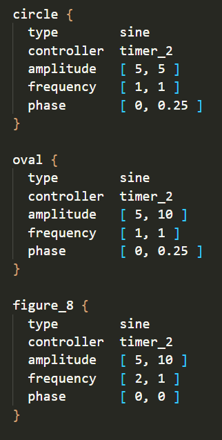

OpenEnded
The original concept for this project was to be an open-source recreation of the engine for The End is Nigh. As a long-time modder of TEiN, I became dissatsfied with working within the limitations of the original engine and wanted to try my hand at creating something new which I would have more creative control over. As time has gone on, my plans have shifted and I am now more focused on using this project as a chance to explore new types of gameplay for precision platforming, as well as developing my C programming skills generally.
Development Blog
For ongoing updates on the game and technical breakdowns of the game's engine, check out the development blog.
Videos
For a collection of various video clips, click here. These clips come from various stages in development, and showcase only a few of the features from the game.
State of the Project
This project has been in development for around 9 months now, with more slightly more serious attention during the last 2 or 3 months.
Originally, this project began as an open-source remake of The End is Nigh (TEiN), with plans to support new movement mechanics, enemies, and better modding tools. However, over the course of development it has evolved to become an entirely new game with some novel ideas which I have not seen explored quite in the same manner anywhere else before.
In this post I want briefly outline the major features of the game's engine (so far) as well as some of the design consideration which have driven my development decisions. As a side note: it shouldn't really have to be said, but obviously the current graphics are not at all even remotely representative of the final product. They're only meant to be some bare-bones placeholders so that I can work on making the game functional before making it pretty. And most of the graphics are stolen from Super Mario Bros. anyhow, so that's not going to fly.
Player Physics
As I developed the new movement mechanics for the game, I began experimenting with modifying the player's physics so that they could retain more momentum. This turned out to be very fun, and since it did not detract from the focus on precision platforming, I continued to modify the player's physics further to suit the type of movement the player could encounter in the world of this new engine.
The player's movement has much more weight to it as compared to TEiN. Instead of thinking in terms of your player's position, you'll be thinking more in terms of velocity. This makes handling in very small, precise sections a bit more difficult, but opens up a whole new range of movement options that were not previously possible. The player can make use of the environment to gain and maintain speed, but unlike something like Sonic the Hedgehog, the player has much more stopping power and maintains control across varying speeds.
Movement Mechanics
The movement of objects in the game world are governed by a simple, but powerful system with two main structures. These are "Movement Components" and "Progress Controllers". Movement components can be thought of as essentially the "path" that an object moves along, while progress controllers determine the position of an object along said path.
Movement Components
The movement of the various tile layers which make up a level are governed by movement components. A movement component is essentially a function of time which reports a position offset along a predetermined path, as well as a rotation. Each movement component references a specific cycle timer which loops after some number of seconds.
A tile layer may have multiple movement components which comprise its movement, and combining these components is as simple as adding together the reported offsets. This system allows a level designer to easily create complex systems of movement. Rotations from a movement component can also be used as a second parameter to a later movement component, which will rotate the offset produced around the movement component's local origin.
There are currently four basic types of movement components:
- sine movement (circles, ellipses, figure eights, etc.)
- pendulum motion
- linear splines
- bezier splines
- rotation
I think this method of conceptualizing the movement of objects is very intuitive and provides a very simple means for designers to come up with new ideas.
For example, in the image above you can see the movement patterns created by some very simple adjustment of the parameters of the sine movement component. You can get some even more interesting results if you start to play with the phase or add a rotation to it.
Progress Controllers
Progress controllers are an abstraction on the purpose of what were originally simply timers. These timers would control cycles of motion in a level by reporting global_time % cycle_time.
Previously, the only method of controlling movement components was through the use of cycle timers. Now movement components can be controlled through other means. At the moment, there are only two other kinds of progress controllers, these are:
- gravity
- weighted
The gravity controller can be used for any kind of acceleration generally, as it actually has no concept of direction (until applied through a movement component). The weighted controller responds to the contact of the player with a tile layer. If a weighted controller is applied to multiple movement components, you can get some very cool results.
Tile System
Tile Types
The tile system attempts to make tile properties as composable as possible. At the moment, the basic "ground" tile types are Solid, Semisolid, Crumble, and Breakable. Solid represents the basic type of a solid tile, while the other three are behavioral modifiers which can all be composed to produce unique results.
Semisolids for each basic solid tile types (solid, crumble, breakable) are pictured on the second row in the image above, and all directional variants of the semisolid tiles are pictured below.
In addition to this, tiles can have behavioural modifiers placed on each individual surface. These modifiers are sticky (black), slippery (blue), bouncy (green), conveyor belts (not pictured for lack of presentable graphics), and a purple surface which sets your player's gravity direction to the normal vector of the tile's surface. And of course, these behaviours stack with the behaviours of the root tile that the modifier is applied to.
Slopes and Rotation
In most tile-based games, slopes come in only a few varieties. Typically you'll have about 3 different angles of slopes which are all behave as just standard ground tiles. In this game, all slopes are made up of standard tiles, and can be rotated to any angle. This means that you can have slopes of disappearing or breakable blocks, spikes, bouncy tiles, and more, giving the designer many more options for level design.
Because of the emphasis on consistent behaviours on rotated tiles, the entire player physics system is agnostic to the direction of collisions and gravity. This means that the engine also supports gravity in any direction, gravity manipulation, and radial sources of gravity.
Design Considerations
There are two primary design considerations which have driven many of the decisions I have made through this game's development: composability and designer control. The movement systems are built around the idea of composing basic movement primitives to create more complex patterns. Due to the top-down nature of the game's update loop, a small change to a single timer can be used to modify the behaviours of an entire level. The tile system is built around providing the designer with the ability to combine all of the tile behaviours in as many ways as possible, with specific parameters to each behaviour giving even more fine-grain control.
The gameplay possibilities are provided by composition, and the tools of the editor provide a means to control these possibilities and shape them to the very particular goals of the designer. Not only do the inner workings of the gae need to be as solid as possible in order to acheive the composability of mechanics that I want, but the tools need to be powerful so that I can actually make full use of the mechanics. One can have a very beautiful piece of marble, but without a sharp chisel it would be impossible to shape it into a sculpture.
Tools
Speaking of chisels, let's talk about tools. The game has a built-in level editor which allows you to quickly switch between testing and editting with the press of a single button. This allows for tweaking and iterating on levels extremely quickly.
The editor is currently a work in progress just as much as the game, but it already has quite a few useful features. In arrange mode, you can arrange all of the tile layers present in the level. In layer edit mode, you can draw tiles into a specific layer, change the rotation of a layer, and set the rotation point of the layer. Tile Layers will automatically grow as you place more tiles to accomodate whatever dimensions you require.
The editor will render gridlines in the coordinate space of whatever tile layer you are actively editting, so you can easily count spaces between tiles.
The editor can also render a preview for the path a tile layer will take once the level is in motion. Expect more features to come which will help you further visualize the behaviours of your level, such as viewing the positions and rotations of all objects at a given time. In combination with greater control over timers, this should help to greatly expedite the process of lining up the timing of moving platforms relative to one another.
More to Come
I could go on and on about any of the individual topics I touched on here (and many more that I didn't), but I'll have to save that for another post. As development continues, I will try to write up some more comprehensive posts on the particulars of each of the systems in the game.